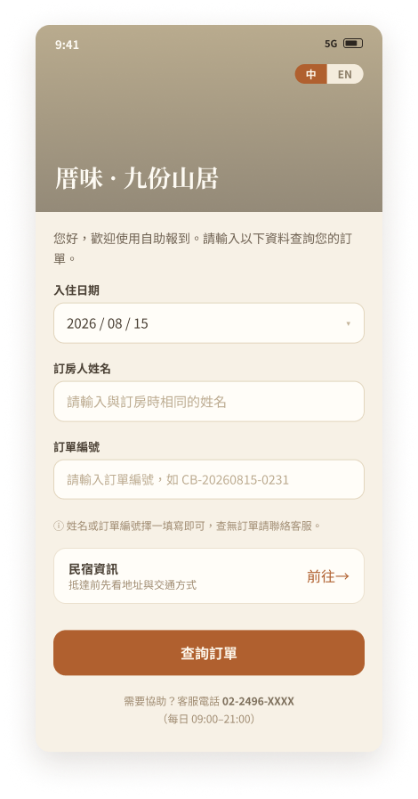
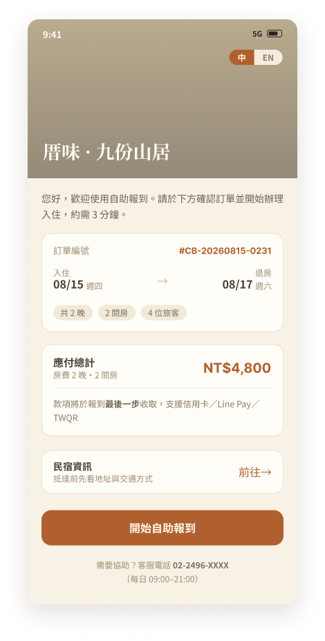
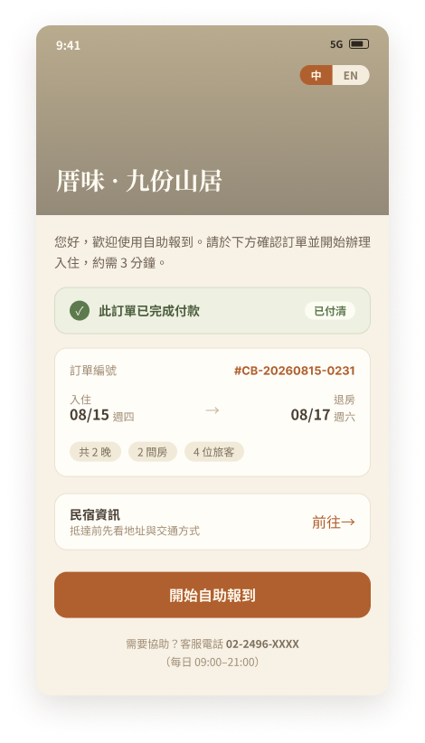
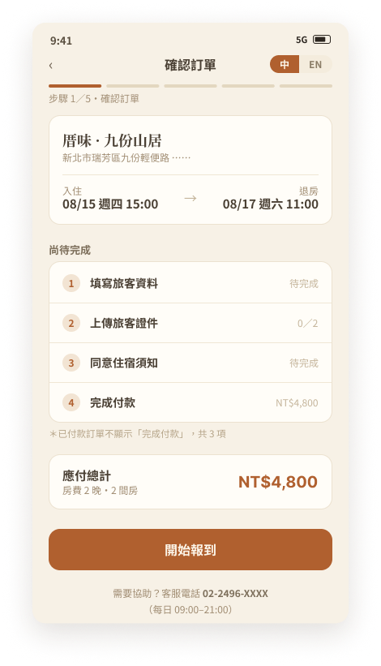
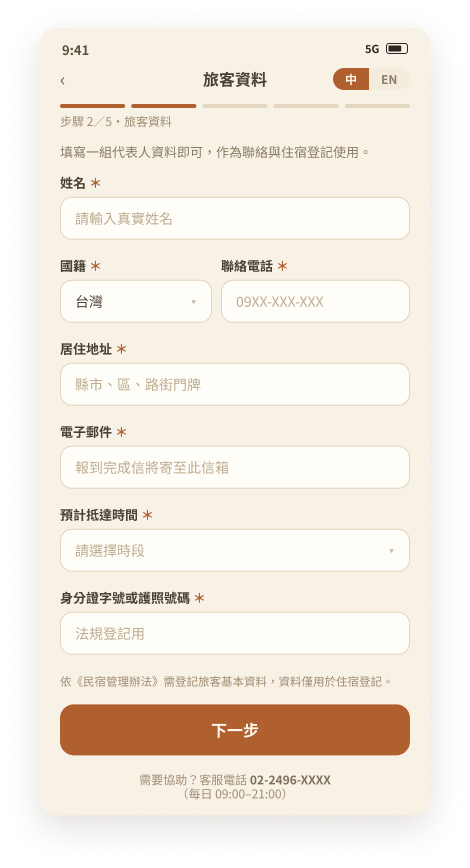
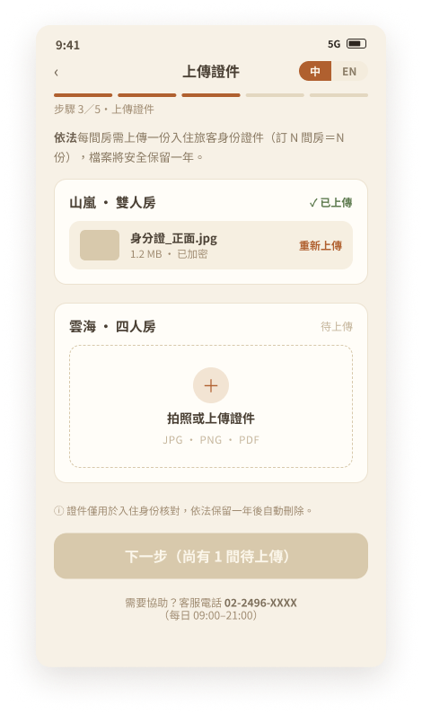
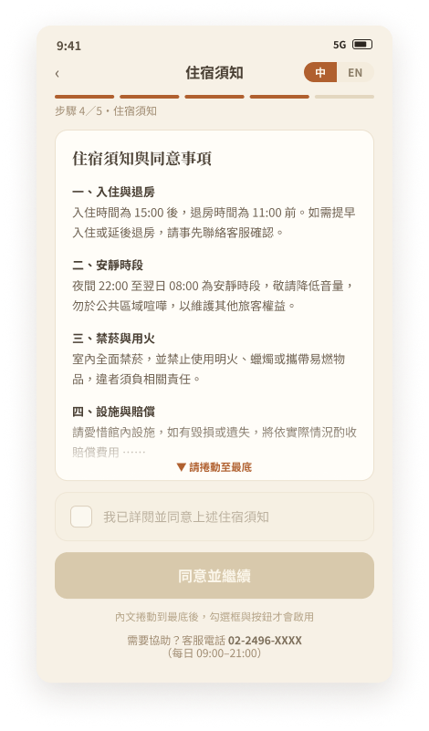
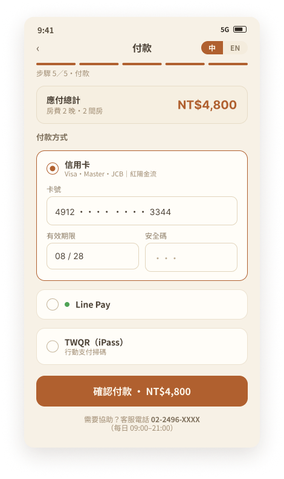
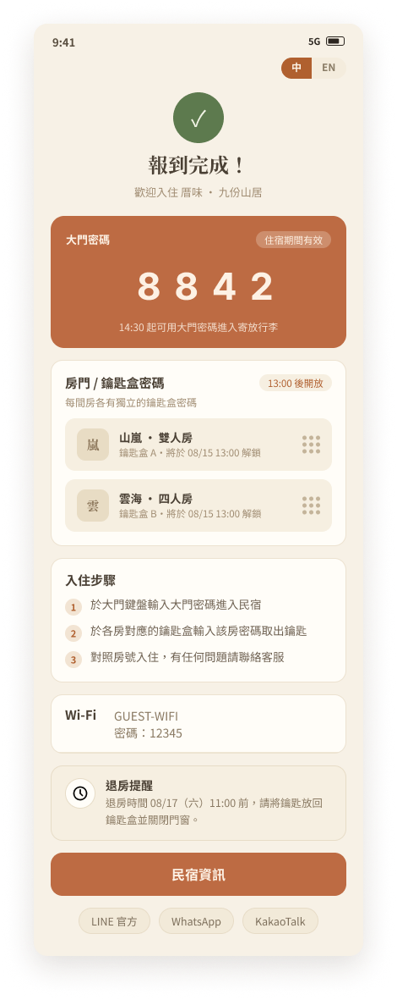
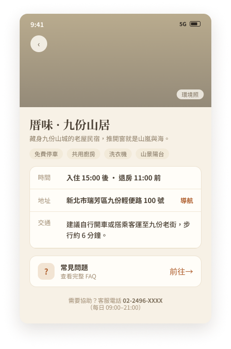

旅客有兩種進入方式，系統判斷付款狀態後顯示對應畫面；兩種狀態都直接開始自助報到，差別只在流程最後是否需要付款（款項於報到最後一步收取）。點任一張圖可放大檢視。
入口只決定「怎麼找到訂單」：帶編號的免輸入，沒帶的先查詢。查詢成功後，兩條路走向完全相同。
簡訊、Email 的專屬報到連結，系統直接認得訂單，客人不需輸入任何資料。
自行進入報到網址，輸入入住日期，姓名或訂單編號擇一填寫即可查詢訂單。

查詢成功後 直接進入付款狀態判斷，不再多一步
同一張訂單卡，只換「狀態橫幅」和提示文字。兩種狀態的主按鈕都是「開始自助報到」——差別在流程最後：待付款訂單多一步付款，款項於報到最後一步收取。

主按鈕：開始自助報到（註明款項於最後一步收取）

主按鈕：開始自助報到（流程中不出現付款步驟）
五步流程：確認訂單 → 旅客資料 → 上傳證件 → 住宿須知 → 付款（僅待付款訂單）→ 報到完成。已付清訂單自動略過付款，待辦共 3 項。







附屬頁面：三個進入頁與報到完成頁都有「民宿資訊」入口，抵達前後隨時可查看時間、地址、交通與常見問題，不在主流程的分岔邏輯內。
※ 流程順序：確認訂單 → 旅客資料 → 上傳證件 → 住宿須知 → 付款 → 報到完成；付款為最後一步、僅待付款訂單需要，已付清訂單自動略過（待辦顯示 3 項）。電腦版設計稿仍為舊版流程，「旅客資料」頁電腦版稿更新後即可補上。例外狀態畫面（查無訂單、付款確認中等）將於下一版補充。